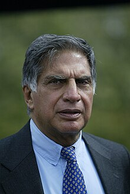

RATAN NAVAL TATA

Ratan Tata is a prominent Indian industrialist and former chairman of Tata Sons, renowned for his philanthropic efforts in education and healthcare, and a recipient of the Padma Vibhushan.
The Legacy of Ratan Tata
- ★ Born on December 28, 1937 in Bombay (now Mumbai), India; educated at Cornell University and completed the Advanced Management Program at Harvard Business School in 1975.
- ★ Joined the Tata Group in 1962, gaining diverse experience across various Tata companies.
- ★ Appointed Chairman of Tata Sons in 1991, succeeding J.R.D. Tata, and restructured the group.
- ★ Led significant global acquisitions, including Tetley, Daewoo Commercial Vehicles, Corus, and Jaguar Land Rover.
- ★ Launched the Tata Nano in 2008 and promoted technological advancements within the group.
- ★ Advocated for social responsibility, significantly funding education, healthcare, and rural development through Tata Trusts.
- ★ Retired as Chairman of Tata Sons in December 2012 but
remained an influential figure in business and philanthropy.
- ★ Received the Padma Bhushan in 2000 and the Padma Vibhushan in 2008, among other international recognitions.
- ★ After retirement ,continues to be involved as Chairman Emeritus of several Tata companies and mentors young entrepreneurs.